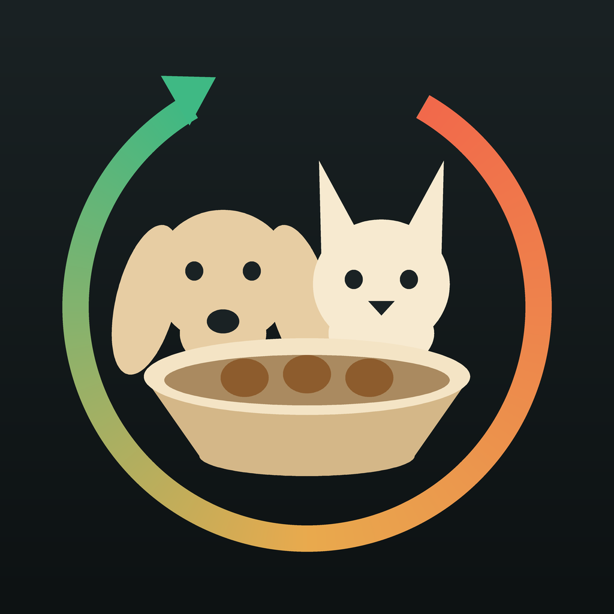

See Dog & Cat Nutrition Coach in action
The latest App Store screens, from today’s next meal to long-term progress.


Swipe or scroll to explore all 10 screens. Select any image to view it larger.

Dog & Cat NutritionDog & Cat Nutrition Coach turns your pet's real food intake and weight trend into a weekly feeding plan that actually adjusts — not a one-time calculator, and not one generic formula for every pet.
Download on the App StoreThe latest App Store screens, from today’s next meal to long-term progress.
Swipe or scroll to explore all 10 screens. Select any image to view it larger.
Built for dog and cat owners who want results, not guesswork.
Dogs are dosed on an activity-scaled share of their current-weight resting energy, with a floor at 60% of it. Cats get a fixed 0.80× resting energy of their ideal weight, with a floor at 80% of that — because cutting a cat's calories too fast can trigger fatty liver disease, which is life-threatening within days.
The engine reads real intake and weight trend, then nudges the daily target each week — keep, increase, decrease, or recheck.
One-tap meal templates, barcode scan, and label OCR keep daily friction minimal so logging actually sticks.
A clear daily treat allowance you can actually follow — instead of just being told to "limit treats."
Combine dry, wet, and fresh food by share, and switch foods safely with a 7-day transition plan.
Add a cat and the app unlocks tools that don't apply to dogs: free-feeding conversion, auto-feeder planning, water logging, and food-preference tracking.
Invite family members with different Apple IDs and share only feeding coordination events to reduce double-feeding.
Generate 30- or 90-day PDF and CSV reports with weight, intake, owner observations, and adaptive changes.
Review monthly adherence, track weight trends, and record meaningful milestones.
See remaining calories on Home or Lock Screen and distinguish served food from what was actually eaten.
The loop that makes the plan stick.
Start free. Upgrade when the app starts knowing your dog or cat.
Pro Monthly is also available. Prices and any eligible introductory offer are supplied by the App Store for your region.
Dog & Cat Nutrition Coach is a weight & nutrition companion, not a medical device. It does not provide veterinary diagnosis or treatment. Always consult your veterinarian for medical decisions.